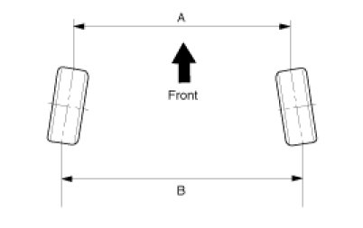
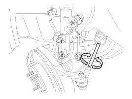

Alignment: Service and Repair
Front Wheel Alignment
CAUTION:
When using a commercially available computerized wheel alignment equipment to inspect the front wheel alignment, always position the vehicle on a level surface with the front wheels facing straight ahead.
Prior to inspection, make sure that the front suspension and steering system are in normal operating condition and that the tires are inflated to the specified pressure.
Toe

B - A > 0: Toe in (+)
B - A < 0: Toe out (-)
Toe Adjustment
1. Loosen the tie rod end lock nut.
2. Remove the bellows clip to prevent the bellows from being twisted.
3. Adjust the toe by screwing or unscrewing the tie rod. Toe adjustment should be made by turning the right and left tie rods by the same amount.
Toe:
Total : 0.0° ± 0.2°
Individual :0.0° ± 0.1°

4. When completing the toe adjustment, install the bellows clip and tighten the tie rod end lock nut to specified torque.
Tightening torque :
49.0 - 53.9N.m (5.0 - 5.5kgf.m, 36.2 - 39.8lb-ft)
Camber and Caster
Camber and Caster are pre-set at the factory, so they do not need to be adjusted. If the camber and caster are not within the standard value, replace or repair the damaged parts and then inspect again.
Camber angle :-0.5°±0.5°
Caster angle :4.24°±0.5°
Rear Wheel Alignment
CAUTION:
When using a commercially available computerized wheel alignment equipment to inspect the rear wheel alignment, always position the vehicle on a level surface.
Prior to inspection, make sure that the rear suspension system is in normal operating condition and that the tires are inflated to the specified pressure.
Toe
B - A > 0: Toe in (+)
B - A < 0: Toe out (-)
Toe is pre-set at the factory, so it does not need to be adjusted. If the toe is not within the standard value, replace or repair the damaged parts and then inspect again.
Toe:
Total : lL-Rl≤0.23°
Individual : 0.25°(+0.2°/ -0.15°)
NOTE:
l L - R l means deviation of the left and right individual toe values.
L : Left toe value
R : Right toe value
Camber
Camber is pre-set at the factory, so it does not need to be adjusted. If the camber is not within the standard value, replace or repair the damaged parts and then inspect again.
Camber:-1.5°±0.5°